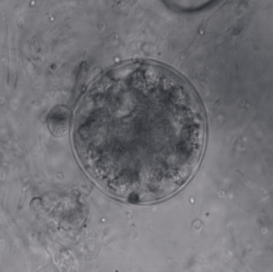
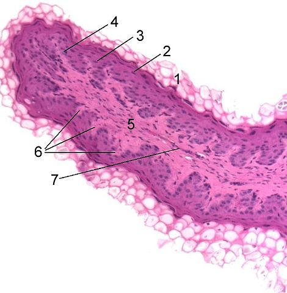
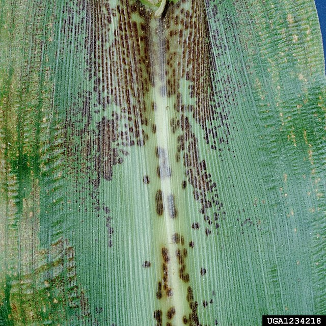
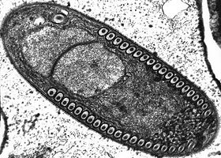
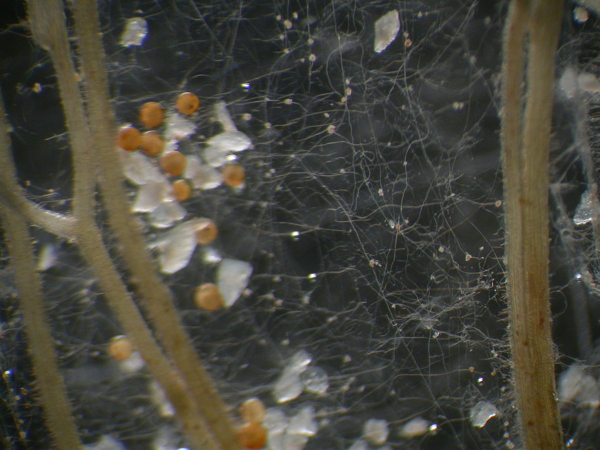
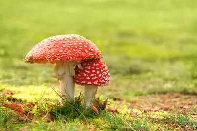

| Nome |
Imagem |
Sobre |
Fonte bibliográfica |
| Chytridiomycota |
 |
Nesse grupo a grande maioria de seus representantes é de água doce, com poucas espécies marinhas e terrestres. Como característica mais marcante, observa-se a presença de uma estrutura de propagação no ambiente aquático flagelada (zoósporo flagelado). |
Clique aqui |
| Neocallimastigomycota |
 |
Esses fungos anaeróbios são encontrados, em sua maioria, vivendo no sistema digestório de mamíferos herbívoros. Produzem zoósporos não flagelados. |
Clique aqui |
| Blastocladiomycota |
 |
São fungos encontrados no ambiente aquático, solo e parasitando insetos. Possuem reprodução sexuada por meio da fusão de gametas e reprodução assexuada com zoósporo com apenas um flagelo. |
Clique aqui |
| Microsporídia |
 |
Fungos que não possuem mitocôndria e flagelos e que são parasitas obrigatórios de animais. |
Clique aqui |
| Glomeromycota |
 |
Esses fungos vivem em associação mutualística com as raízes de algumas plantas. Nessa associação, a planta fornece nutrientes para o fungo provenientes da fotossíntese, e o fungo absorve água, nutrientes e minerais do solo e transfere-os para a planta. Esse filo de fungos é recente e foi proposto em 2001. |
Clique aqui |
| Ascomycota |
 |
É o maior grupo de fungos existente. Estima-se que cerca de 75% dos fungos descritos pertençam a esse grupo, estando registradas mais de 32.000 espécies. Eles são encontrados na natureza como parasitas, saprófitos e formando líquens. Nesse grupo, observa-se a estrutura de propagação conhecida como asco, a qual possui ascósporos (esporos sexuados). |
Clique aqui |
| Basidiomycota |
 |
Esse grupo é tradicionalmente conhecido como cogumelos orelhas-de-pau e são considerados como os mais evoluídos do reino em virtude de sua complexidade. São fungos terrestres, em sua maioria. Formam, por reprodução sexuada, uma estrutura conhecida como basídio, o qual contém basidiósporos (esporos sexuados). Os fungos desse grupo são macroscópicos e diferenciam-se pela forma, coloração e tamanho. |
Clique aqui |